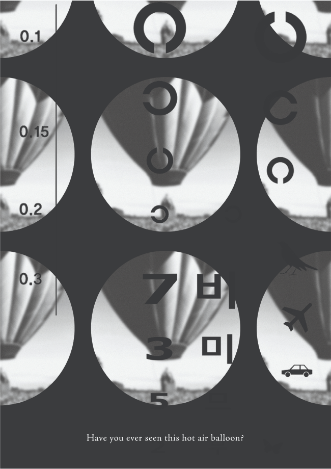
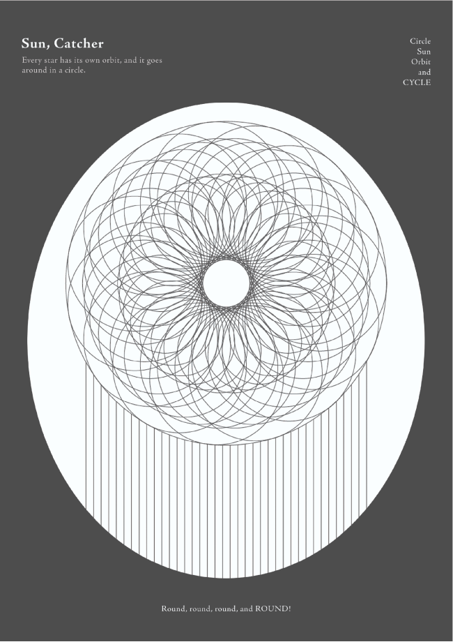
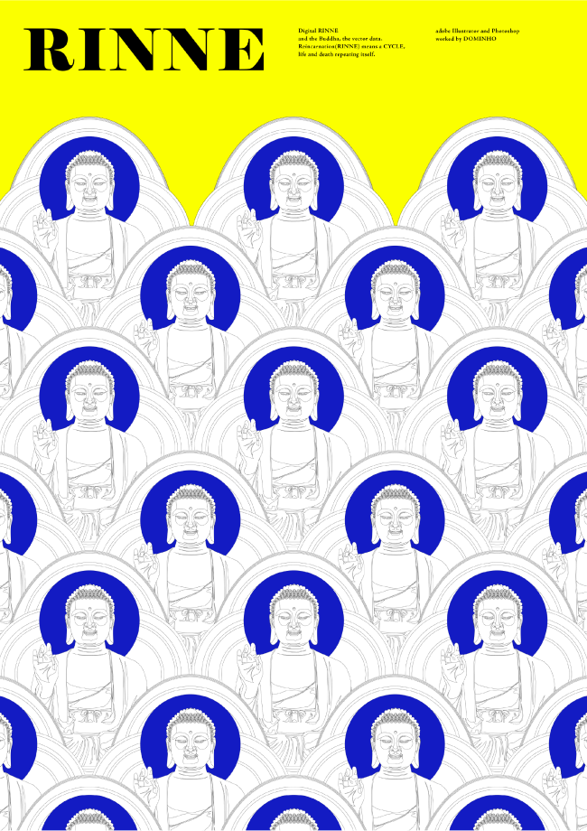
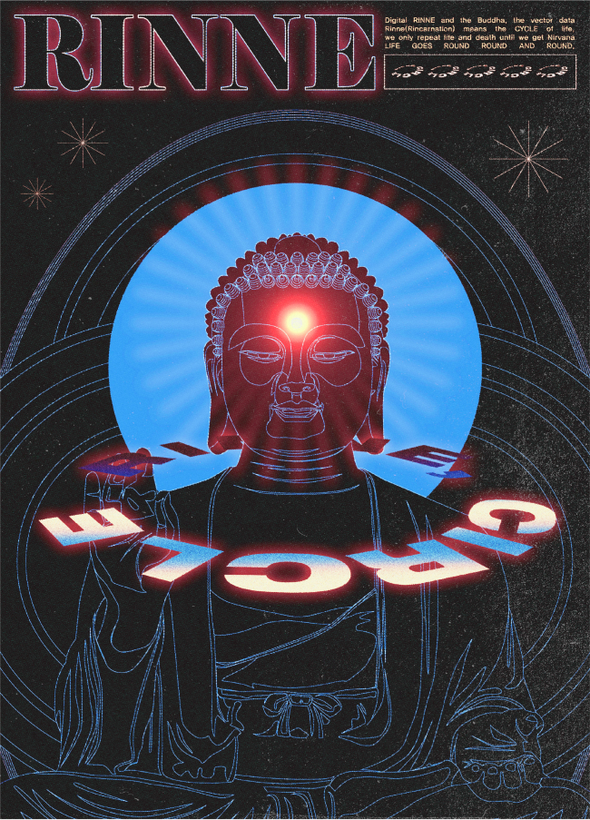

Project
Contact
@mvrasaki_faygo
Designer
Shape Research
강소연
원의 연구
Category
Shape Poster1 / Shape Poster2 / Shape Poster3
인간은 살면서 수많은 원을 마주하게 됩니다. 아주 미시적이기도, 아주 거시적이기도 하죠.
SHAPE RESEARCH POSTER(CIRCLE)
RINNE THE CIRCLE
RINNE
Poster
Poster
Poster
원에서 떠올릴 수 있는 것들을 포스터로 제작했습니다. 가령 시력검사의 구멍이라
든지, 무수히 반복되는 원들로 이루어진 썬캐쳐 같은 것 말입니다.
윤회는 원과 같습니다. 원을 잘 나타내는 요소 중 하나였다고 생각합니다.
원은 회전하고 인간의 삶도 순환합니다.



